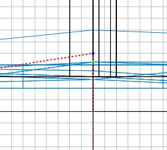
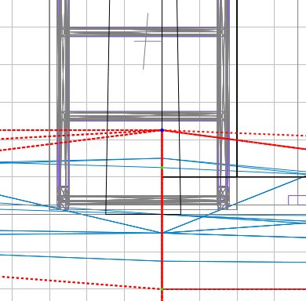

|

If it isn't clear how far you need to drag
the vertex, you can briefly select the door
or the floor so you can see the required
baseline, but you will need to press V
again.
Drag the vertex down to the required
baseline.
In the 3D view this now appears that
the terrain is out of the way. Check
it by going inside the building, selecting
the door and hiding it.
As you can see, there is still some caulk
showing, so we need to drag another vertex
down too. But this time it is slightly
more involved, and in fact is much more the
usual state of affairs, being that we'll
need to drag multiple vertices at the same
time.
Take your 3D view outside again. Get
the 2D overhead view. In the 3D view
(it is easiest unless you hide the sky to
make 2D selection easy) select all of the
triangles that share the vertex at the
corner of the building. There are 6
triangles to select.
This is what the 2D view should show:
Press V and select the required vertex -
this gets quite hard in 2D but sometimes
with the rolling hills it can be impossible
in 3D so even the quite hard 2D view is
easier :(

As can be seen, the required vertex is not
grid aligned. As we are at grid scale
4 and the dot is clearly 1/4 up from a line,
we'll need to drop down 2 scales: press 2 to
get grid scale 2.
Ok now we have the required scale, but it
has become hard to see where we have to drag
it. The best thing is to drag it just
enough to put it onto a bigger, better grid
scale. So drag it one notch down, then
press 4 to go back to grid scale 4.
Drag it down a couple of notches, and it
should look like this:
Press ESC to let go of all the
brushes. You can see now that the door
is unobscured, so you can reveal the door
again.
 When you edit your terrain mesh this
way, Radiant may well generate duplicate
planes, which will cause your
compilation to open the debug
window. So after each editing
session and before you compile, you
should click the Brush Cleanup
button. If it finds errors it
deletes them and tells you how many
invalid planes were removed. it
also selects the mesh group. You
should deselect the group and click the
button again until the Brush Cleanup
reports 0 invalid/duplicate planes
removed. Finally deselect the
group and save your work. When you edit your terrain mesh this
way, Radiant may well generate duplicate
planes, which will cause your
compilation to open the debug
window. So after each editing
session and before you compile, you
should click the Brush Cleanup
button. If it finds errors it
deletes them and tells you how many
invalid planes were removed. it
also selects the mesh group. You
should deselect the group and click the
button again until the Brush Cleanup
reports 0 invalid/duplicate planes
removed. Finally deselect the
group and save your work.
|
|
There will be occasions where the
vertex you wish to manipulate shares its
Z co-ordinate with another vertex of one
or more of the selected triangles (ie,
that point of the triangle shares its
height with other points on the selected
triangles). In the 2D view you
will not always be able to see the other
vertices at the same height as they may
be obscuring each other depending on
whether you are looking down the X or Y
axis at them.
When you try to select and drag the
vertex, you may find you are dragging
the wrong vertex :(
This is because even though you may
have selected the right vertex in the
3D view, when you click on the blue
dot in the 2D view, Radiant will
realize that there is another vertex
at that point which is closer to you,
the viewer, and so handily selects
that one for you. You may notice
this has happened in the 3D view - but
if you don't, you're going to start
dragging the wrong vertices.
Watch out for this. If you find
this happening, try using the other 2D
side view. Or selecting the
other troublesome triangles and move
their offending vertex up/down a
little to get it out of the way.
Final option is to carefully drag a
notch up/down in the 3D view - this is
hazardous as it is easy to
accidentally drag sideways.
|
Final tip is to remind you to get down to
the lowest grid scale needed to get your
vertex onto a grid intersection. Then
move it to a nearby larger scale grid
intersection, change the grid scale up
accordingly by pressing a bigger number,
even 9 if possible, then zoom out in the 2D
view and drag in larger increments.
Always try to leave any dragged vertices on
nice big grid intersections, it will help
you a lot.
Do not drag vertices sideways in the 2D
view, only up and down!!!!
|


{kind=link}